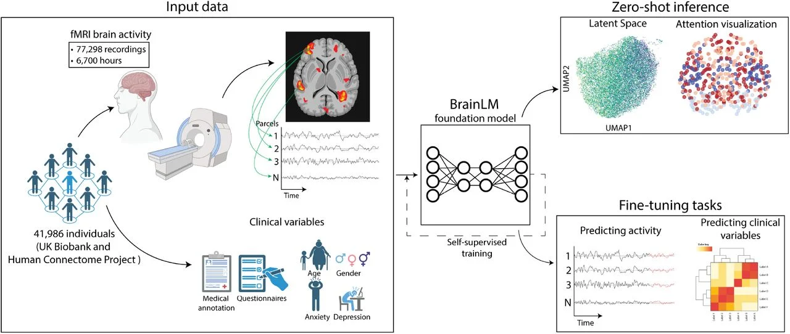
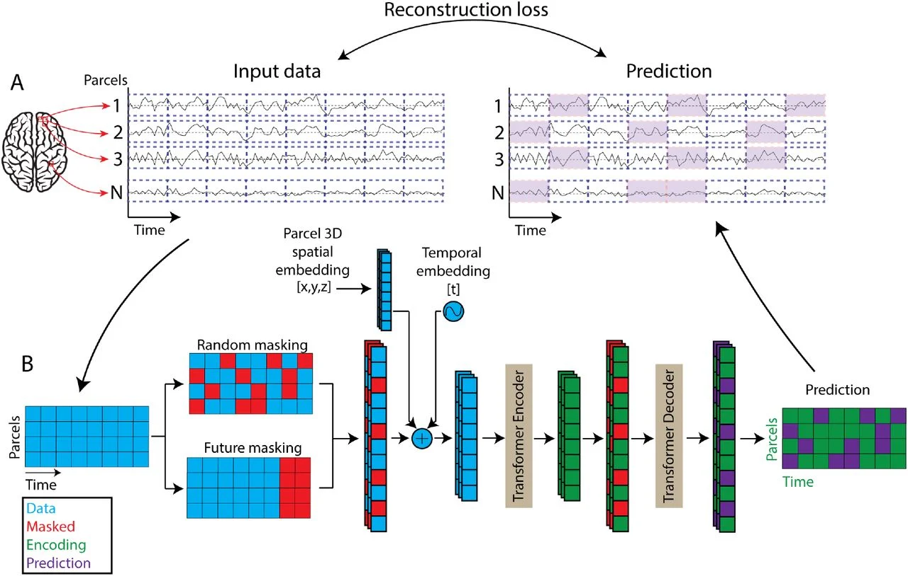

Fine-tuning
Clinical variables
A head on the pretrained representation predicts variables such as age, anxiety, and PTSD scores.
A foundation model for brain activity recordings
Yale University
TL;DR. BrainLM learns the dynamics of human brain activity from 6,700 hours of fMRI by predicting masked segments of parcel time series. The pretrained model can be fine-tuned to predict clinical variables and forecast future brain states, and in zero-shot mode it recovers intrinsic functional networks directly from raw recordings.
We introduce the Brain Language Model (BrainLM), a foundation model for brain activity dynamics trained on 6,700 hours of fMRI recordings. Using self-supervised masked-prediction training, BrainLM performs well in both fine-tuning and zero-shot inference. Fine-tuning accurately predicts clinical variables such as age, anxiety, and PTSD, and forecasts future brain states. The model also generalizes to external cohorts not seen during training.
In zero-shot mode, BrainLM identifies intrinsic functional networks directly from raw fMRI data without any network-based supervision, and its latent representations reveal relationships between brain activity patterns and cognitive states. BrainLM offers a versatile, interpretable framework for studying the spatiotemporal dynamics of human brain activity.
Predict clinical variables (age, anxiety, PTSD) and forecast future brain states from the pretrained model.
Attention and latent space recover intrinsic functional networks without network labels.
Transfers to external cohorts not seen during training.
of fMRI used for pretraining
recordings
individuals from UK Biobank and the Human Connectome Project
parameters in the released ViT-MAE checkpoints
fMRI is parcellated into regional time series, split into patches, and learned with a masked autoencoder: the model reconstructs hidden patches from the visible ones. The same pretrained model is then fine-tuned or used zero-shot.

Each recording becomes a matrix of parcels by timepoints (for example 424 AAL parcels). Every parcel’s time series is split into short patches; each patch becomes a token.
Tokens receive a spatial embedding computed from the parcel’s 3D coordinates and a temporal embedding of the patch position, so the model knows where and when each segment was recorded.
A subset of tokens is hidden, either at random or at the end of each recording (future masking). A Transformer encoder processes the visible tokens; a decoder receives the encodings plus mask tokens and predicts the hidden patches.
The reconstruction loss is computed only on masked patches, so the model must learn how activity in one region and time relates to all the others.

Fine-tuning
A head on the pretrained representation predicts variables such as age, anxiety, and PTSD scores.
Forecasting
Trained with future masking, the model predicts upcoming activity from the recording so far.
Zero-shot
Attention and latent representations recover intrinsic functional networks without network labels.
The ICLR 2024 checkpoints use a ViT-MAE encoder–decoder (weights on Hugging Face). The josueortc/BrainLM repository provides a decoder-only Transformer with block-causal attention over timepoint-major tokens, for pretraining and fine-tuning on Arrow-format fMRI data.
Tokens are ordered timepoint-major: all parcels for the first patch window, then all parcels for the next, and so on. Parcels in the same window attend to each other; across windows, attention is causal, so there is no look-ahead.
Random: a fraction of tokens is replaced with a learned [MASK]. Forward: the last temporal token of each parcel is masked. Loss is MSE or MAE on masked positions.
A 3-layer MLP on the CLS output supports scalar regression (for example age, PHQ-9, PCL) with the same input format as pretraining.
Train and validation sets are Hugging Face Arrow datasets saved with dataset.save_to_disk(path). Each example holds a (timepoints × parcels) recording and optional metadata; parcel coordinates live in a separate dataset and are broadcast to every sample.
# train / val: one example per recording
Voxelwise_RobustScaler_Normalized_Recording: (num_timepoints, num_parcels) # e.g. (500, 424)
Age.At.MHQ: float # optional, for fine-tuning
PHQ9.Severity: float # optional
# coords: one row per parcel
X, Y, Z: float # e.g. MNI coordinatesClone the repository and install the dependencies.
git clone https://github.com/josueortc/BrainLM.git
cd BrainLM
pip install -r requirements.txt # or: pip install -e .Creates train, validation, and coordinate datasets with the expected schema, so you can run end to end without large fMRI archives.
python generate_sample_data.py --output_dir ./sample_data --num_train 100 --num_val 20python train.py \
--output_dir ./runs/demo \
--train_dataset_path ./sample_data/train \
--val_dataset_path ./sample_data/val \
--coords_dataset_path ./sample_data/coords \
--num_timepoints_per_voxel 200 \
--timepoint_patching_size 20 \
--hidden_size 256 \
--num_hidden_layers 4 \
--max_train_samples 20python finetune.py \
--model_name_or_path ./runs/demo \
--train_dataset_path ./sample_data/train \
--val_dataset_path ./sample_data/val \
--coords_dataset_path ./sample_data/coords \
--variable_of_interest_col_name Age.At.MHQ \
--output_dir ./runs/finetune_demoPretrained weights. The original ICLR 2024 ViT-MAE checkpoints (111M and 650M parameters) are at huggingface.co/vandijklab/brainlm, with code at vandijklab/BrainLM. They use the encoder–decoder architecture, not the decoder-only model above.
If you use BrainLM in your research, please cite:
@inproceedings{ortegacaro2024brainlm,
title = {{BrainLM}: A foundation model for brain activity recordings},
author = {Ortega Caro, Josu{\'e} and Oliveira Fonseca, Antonio Henrique and
Rizvi, Syed A. and Rosati, Matteo and Averill, Christopher and
Cross, James L. and Mittal, Prateek and Zappala, Emanuele and
Dhodapkar, Rahul Madhav and Abdallah, Chadi and van Dijk, David},
booktitle = {International Conference on Learning Representations (ICLR)},
year = {2024},
url = {https://openreview.net/forum?id=RwI7ZEfR27}
}